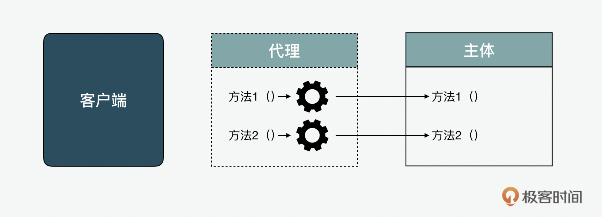

- 00 开篇词 JavaScript的进阶之路.md.html
- 01 函数式vs.面向对象：响应未知和不确定.md.html
- 02 如何通过闭包对象管理程序中状态的变化？.md.html
- 03 如何通过部分应用和柯里化让函数具象化？.md.html
- 04 如何通过组合、管道和reducer让函数抽象化？.md.html
- 05 map、reduce和monad如何围绕值进行操作？.md.html
- 06 如何通过模块化、异步和观察做到动态加载？.md.html
- 07 深入理解对象的私有和静态属性.md.html
- 08 深入理解继承、Delegation和组合.md.html
- 09 面向对象：通过词法作用域和调用点理解this绑定.md.html
- 10 JS有哪8种数据类型，你需要注意什么？.md.html
- 11 通过JS引擎的堆栈了解闭包原理.md.html
- 12 JS语义分析该用迭代还是递归？.md.html
- 13 JS引擎如何实现数组的稳定排序？.md.html
- 14 通过SparkPlug深入了解调用栈.md.html
- 15 如何通过哈希查找JS对象内存地址？.md.html
- 16 为什么环形队列适合做Node数据流缓存？.md.html
- 17 如何通过链表做LRU_LFU缓存？.md.html
- 18 TurboFan如何用图做JS编译优化？.md.html
- 19 通过树和图看如何在无序中找到路径和秩序.md.html
- 20 算法思想：JS中分治、贪心、回溯和动态规划.md.html
- 21 创建型：为什么说Redux可以替代单例状态管理.md.html
- 22 结构型：Vue.js如何通过代理实现响应式编程.md.html
- 23 结构型：通过jQuery看结构型模式.md.html
- 24 行为型：通过观察者、迭代器模式看JS异步回调.md.html
- 25 行为型：模版、策略和状态模式有什么区别？.md.html
- 26 特殊型：前端有哪些处理加载和渲染的特殊“模式”？.md.html
- 27 性能：如何理解JavaScript中的并行、并发？（上）.md.html
- 28 性能：如何理解JavaScript中的并行、并发？（下）.md.html
- 29 性能：通过Orinoco、Jank Busters看垃圾回收.md.html
- 30 网络：从HTTP_1到HTTP_3，你都需要了解什么？.md.html
- 31 安全：JS代码和程序都需要注意哪些安全问题？.md.html
- 32 测试（一）：开发到重构中的测试.md.html
- 33 测试（二）：功能性测试.md.html
- 34 测试（三）：非功能性测试.md.html
- 35 静态类型检查：ESLint语法规则和代码风格的检查.md.html
- 36 Flow：通过Flow类看JS的类型检查.md.html
- 37 包管理和分发：通过NPM做包的管理和分发.md.html
- 38 编译和打包：通过Webpack、Babel做编译和打包.md.html
- 39 语法扩展：通过JSX来做语法扩展.md.html
- 40 Polyfill：通过Polyfill让浏览器提供原生支持.md.html
- 41 微前端：从MVC贫血模式到DDD充血模式.md.html
- 42 大前端：通过一云多端搭建跨PC_移动的平台应用.md.html
- 43 元编程：通过Proxies和Reflect赋能元编程.md.html
- 结束语 JavaScript的未来之路：源于一个以终为始的初心.md.html
- 捐赠
22 结构型：Vue.js如何通过代理实现响应式编程
你好，我是石川。
上一讲我们介绍了几种不同的创建型模式，今天我们来说说设计模式中的结构型模式。在结构型模式中，最经典、最常用的就非代理模式莫属了。在JavaScript的开发中，代理模式也是出现频率比较高的一种设计模式。
前端的朋友们应该都对Vue.js不会感到陌生。Vue.js的一个很大的特点就是用到了如今流行的响应式编程（Reactive Programming）。那它是怎么做到这一点的呢？这里面离不开代理模式，这一讲我们主要解答的就是这个问题。但是在解开谜底之前，我们先来看看代理模式比较传统直观的一些应用场景和实现方式吧。
代理的应用场景
在代理设计模式中，一个代理对象充当另一个主体对象的接口。很多人会把代理模式和门面模式做对比。后面几讲，我们会介绍到门面模式。这里我们需要了解的是代理模式与门面模式不同，门面模式最主要的功能是简化了接口的设计，把复杂的逻辑实现隐藏在背后，把不同的方法调用结合成更便捷的方法提供出来。而代理对象在调用者和主体对象之间，主要起到的作用是保护和控制调用者对主体对象的访问。代理会拦截所有或部分要在主体对象上执行的操作，有时会增强或补充它的行为。

如上图所示，一般代理和主体具有相同的接口，这对调用者来说是透明的。代理将每个操作转发给主体，通过额外的预处理或后处理增强其行为。这种模式可能看起来像“二道贩子”，但存在即合理，代理特别是在性能优化方面还是起到了很大作用的。下面我们就一一来看看。
延迟初始化和缓存
因为代理充当了主体对象的保护作用，减少了客户端对代理背后真实主体无效的消耗。这就好像是公司里的销售，他们不是收到所有的客户需求都直接透传给到项目组来开发，而是接到客户的需求后，先给对方一个产品服务手册，当对方真的选择某项服务以及确定购买后，这时候售前才会转到项目团队来实施，再把结果交付给客户。
这个例子是我们可以称之为延迟初始化的应用。在这种情况下，代理可以作为接口提供帮助。代理接受初始化请求，在明确调用者确实会使用主体之前不会传递给它。客户端发出初始化请求并且代理先做响应，但实际上并没有将消息传递给主体对象，直到客户端明显需要主体完成一些工作，只有这样的情况下，代理才会将两条消息一起传递。
在这个基础之上，我们就可以看到第二个例子。在这个例子中，代理除了起到延迟初始化的作用外，还可以增加一层缓存。当客户端第一次访问的时候，代理会合并请求给主体，并且把结果先缓存，再分开返回给客户端。在客户端第二次发起请求2的时候，代理可以直接从缓存中读取信息，不需要访问主体，就直接返回给客户端。
代理的其它应用场景
作为一门Web语言，JavaScript经常要和网络请求打交道，基于上述的方式，就能对性能优化起到很大的作用。除了延迟初始化和缓存外，代理还在很多其它方面有着很重要的用途。比如数据验证，代理可以在将输入转发给主体之前对输入的内容进行验证，确保无误后，再传给后端。除此之外，代理模式也可以用于安全验证，代理可以用来验证客户端是否被授权执行操作，只有在检查结果为肯定的情况下，才将请求发送给后端。
代理还有一个应用场景是日志记录，代理可以通过拦截方法调用和相关参数，重新编码。另外，它还可以获取远程对象并放到本地。说完了代理的应用场景，接下来我们可以看一下它在JavaScript中的实现方式。
代理的实现方式
代理模式在JavaScript中有很多种实现方式。其中包含了：1. 对象组合或对象字面量加工厂模式；2. 对象增强；3. 使用从ES6开始自带的内置的Proxy。这几种方式分别有它们的优劣势。
组合模式
我们先看看组合模式，在上一节我们讲过了，基于函数式编程的思想，我们在编程中，应该尽量保证主体的不变性。基于这个原则，组合可以被认为是创建代理的一种简单而安全的方法，因为它使主体保持不变，从而不会改变其原始行为。它唯一的缺点是我们必须手动 delegate 所有方法，即使我们只想代理其中的一个方法。此外，我们可能必须 delegate 对主题属性的访问。还有一点就是如果想要做到延迟初始化的话，基本只可以用到组合。下面我用伪代码做个展示：
class Calculator {
constructor () {
/*...*/
}
plus () { /*...*/ }
minus () { /*...*/ }
}
class ProxyCalculator {
constructor (calculator) {
this.calculator = calculator
}
// 代理的方法
plus () { return this.calculator.divide() }
minus () { return this.calculator.multiply() }
}
var calculator = new Calculator();
var proxyCalculator = new ProxyCalculator(calculator);
除了上述的方式外，我们也可以基于组合的思路用工厂函数来做代理创建。
function factoryProxyCalculator (calculator) {
return {
// 代理的方法
plus () { return calculator.divide() },
minus () { return calculator.multiply() }
}
}
var calculator = new Calculator();
var proxyCalculator = new factoryProxyCalculator(calculator);
对象增强
再来说第二种模式对象增强（Object Augmentation），对象增强还有一个名字叫猴子补丁（Monkey Patching）。对于对象增强来说，它的优点就是不需要 delegate 所有方法。但是它最大的问题是改变了主体对象。用这种方式确实是简化了代理创建的工作，但弊端是会造成函数式编程思想中的“副作用”，因为在这里，主体不再具有不可变性。
function patchingCalculator (calculator) {
var plusOrig = calculator.plus
calculator.plus = () => {
// 额外的逻辑
// 委托给主体
return plusOrig.apply(calculator)
}
return calculator
}
var calculator = new Calculator();
var safeCalculator = patchingCalculator(calculator);
内置Proxy
最后，我们再来看看使用ES6内置的Proxy。从ES6之后，JavaScript便支持了Proxy。它结合了对象组合和对象增强各自的优点，我们既不需要手动的去 delegate 所有的方法，也不会改变主体对象，保持了主体对象的不变性。但是它也有一个缺点，就是它几乎没有polyfill。也就是说，如果使用内置的代理，就要考虑在兼容性上做出一定的牺牲。真的是鱼和熊掌不能兼得。
var ProxyCalculatorHandler = {
get: (target, property) => {
if (property === 'plus') {
// 代理的方法
return function () {
// 额外的逻辑
// 委托给主体
return target.divide();
}
}
// 委托的方法和属性
return target[property]
}
}
var calculator = new Calculator();
var proxyCalculator = new Proxy(calculator, ProxyCalculatorHandler);
VUE如何用代理实现响应式编程
我们在上一讲讲到单例模式时，从解决状态管理时用到的Redux和reducer，可以看出一些三方库对传统面向对象的模式下，加入函数式编程来解决问题的思路。今天我们再来剖析下另外一个库，也就是Vue.js状态管理的思想。回到开篇的问题，Vue.js 是如何用代理实现响应式编程的呢？这里Vue.js通过代理创建了一种Change Obsverver的设计模式。
Vue.js 最显着的特点之一是无侵入的反应系统（unobtrusive reactivity system）。组件状态是响应式 JavaScript 对象，当被修改时，UI会更新。就像我们使用Excel时，如果我们在A2这个格子里设置了一个 A0 和 A1 相加的公式 “= A0 + A1”的话，当我们改动 A0 或 A1 的值的时候，A2也会随之变化。这也是我们在前面说过很多次的在函数式编程思想中的副作用（side effect）。
在JavaScript中，如果我们用命令式编程的方式， 可以看到这种副作用是不存在的。
var A0 = 1;
var A1 = 2;
var A2 = A0 + A1;
console.log(A2) // 返回是 3
A0 = 2;
console.log(A2) // 返回仍然是 3
但响应式编程（Reactive Programming）是一种基于声明式编程的范式。如果要做到响应式编程，我们就会需要下面示例中这样一个 update 的更新功能。这个功能会使得每次当 A0 或 A1 发生变化时，更新 A2 的值。这样做，其实就产生了副作用，update 就是这个副作用。A0 和 A1 被称为这个副作用的依赖。这个副作用是依赖状态变化的订阅者。whenDepsChange 在这里是个伪代码的订阅功能。
var A2;
function update() {
A2 = A0 + A1;
}
whenDepsChange(update);
在 JavaScript 中没有 whenDepsChange 这样的机制可以跟踪局部变量的读取和写入 。Vue.js 能做的，是拦截对象属性的读写。JavaScript 中有两种拦截属性访问的方法：getter/setter 和 Proxies。由于浏览器支持限制，Vue 2 仅使用 getter/setter。在 Vue 3 中，Proxies 用于响应式对象，getter/setter 用于通过属性获取元素的 refs。下面是一些说明响应式对象如何工作的伪代码：
function reactive(obj) {
return new Proxy(obj, {
get(target, key) {
track(target, key)
return target[key]
},
set(target, key, value) {
target[key] = value
trigger(target, key)
}
})
}
你可能会想，上面对set和get的拦截和自定义，怎么就能做到对变化的观察呢？这就要说到 handler 里包含一系列具有预定义名称的可选方法了，称为陷阱方法（trap methods），例如：apply、get、set 和 has，在代理实例上执行相应操作时会自动调用这些方法。所以我们在拦截和自定义后，它们会在对象发生相关变化时被自动调用。所以假设我们可以订阅A0和A1的值的话，那么在这两个值有改动的情况下，就可以自动计算A2的更新。
import { reactive, computed } from 'vue'
var A0 = reactive(0);
var A1 = reactive(1);
var A2 = computed(() => A0.value + A1.value);
A0.value = 2;
延伸：Proxy还可以用于哪些场景
JavaScript内置的Proxy除了作为代理以外，还有很多作用。基于它的拦截和定制化的特点，Proxy也广泛用于对象虚拟化（object virtualization）、运算符重载（operator overloading）和最近很火的元编程（meta programming）。这里我们不用伪代码，换上一些简单的真代码，看看陷阱方法（trap methods）的强大之处。
对象虚拟化
我们先来看一下对象虚拟化，下面的例子中的 oddNumArr 单数数组就是一个虚拟的对象。我们可以查看一个单双数是不是在单数数组里，我们也可以获取一个单数，但是实际上这个数组里并没有储存任何数据。
const oddNumArr = new Proxy([], {
get: (target, index) => index % 2 === 1 ? index : Number(index)+1,
has: (target, number) => number % 2 === 1
})
console.log(4 in oddNumArr) // false
console.log(7 in oddNumArr) // true
console.log(oddNumArr[15]) // 15
console.log(oddNumArr[16]) // 17
运算符重载
运算符重载就是对已有的运算符重新进行定义，赋予其另一种功能，以适应不同的数据类型。比如在下面的例子中，我们就是通过重载“.”这个符号，所以在执行obj.count时，我们看到它同时返回了拦截get和set自定义的方法，以及返回了计数的结果。
var obj = new Proxy({}, {
get: function (target, key, receiver) {
console.log(`获取 ${key}!`);
return Reflect.get(target, key, receiver);
},
set: function (target, key, value, receiver) {
console.log(`设置 ${key}!`);
return Reflect.set(target, key, value, receiver);
}
});
obj.count = 1; // 返回：设置 count!
obj.count;
// 返回：获取 count!
// 返回：设置 count!
// 返回：1
除了对象虚拟化和运算符重载 ，Proxy的强大之处还在于元编程的实现。但是元编程这个话题过大，我们后面会专门花一节课来讲。
总结
通过今天的内容，我们再一次看到，面向对象、函数式和响应式的交集。经典的关于设计模式的书对代理的解释更多是单纯的面向对象，但是通过开篇的问题，我们可以看到代理其实也是解决响应式编程的状态追踪问题的一把利器。所以，从Vue.js用到的基于代理的变化观察者（change observer）模式，我们也可以看出任何设计模式都不是绝对的，而是可以互相结合形成新的模式来解决问题。
思考题
我们说响应式设计用到了很多函数式编程的思想，但是又不完全是函数式编程，你能说出它们的一些差别吗？
欢迎在留言区分享你的答案、交流学习心得或者提出问题，如果觉得有收获，也欢迎你把今天的内容分享给更多的朋友。我们下期再见！
© 2019 - 2023 Liangliang Lee. Powered by gin and hexo-theme-book.